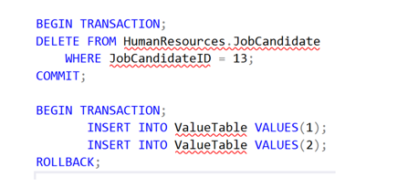

Transakce-a-transakční-zpracovani-ACID
Otázky
co je to transakce
příklad
co je to ACID
Transakce
Transakce je logická a atomická (všechno nebo nic)
převádí DB z jednoho konzistentního stavu do druhého --> db zůstane v konzistentním stavu bez ztráty dat
Obsahuje jeden nebo více SQL příkazů, je definována jako celek, který se buď provede celý, nebo nic z něj (either commit, nebo rollback)
Splňuje pravidla ACID
A - atomicity --> transkace proběhne celá nebo žádná její část
C - consistency --> zaručuje, že budou zapsána pouze platná data
I - isolation --> částečné změny provedené v rámci jedn transakce před jejím dokončením nejsou viditelné jiným transakcím
D - durability --> v moment co se commitne už je to natrvalo uloženo v DB, žádná chybu už neovlivní změnu dat

Využití
Tvorba DB scriptem
bankovní platba apod.
Pojmy
Optimistický přístup
Neošetřujeme čtení dat
Pesimistický přístup
ošetřujeme vše
Deadlock
2 transakce se navzájeme blokují --> dojde k zacyklení
Sum-up
Transakce--> soubor příkazů co se buď provedou všechny, nebo žádný